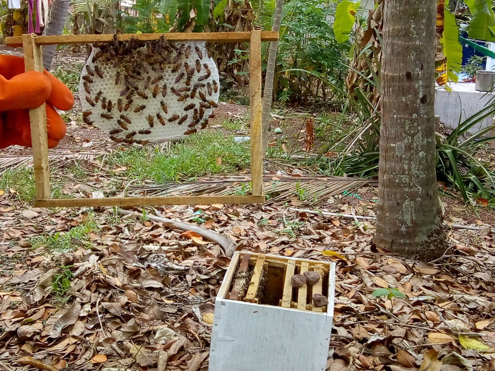
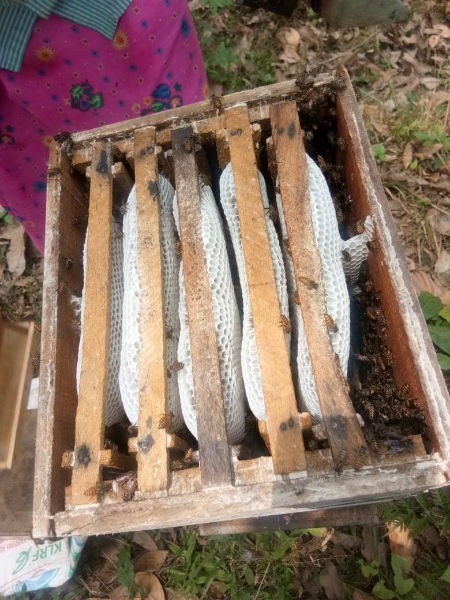
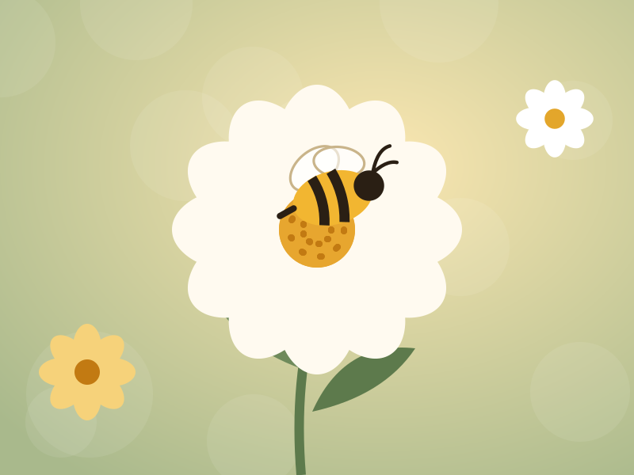
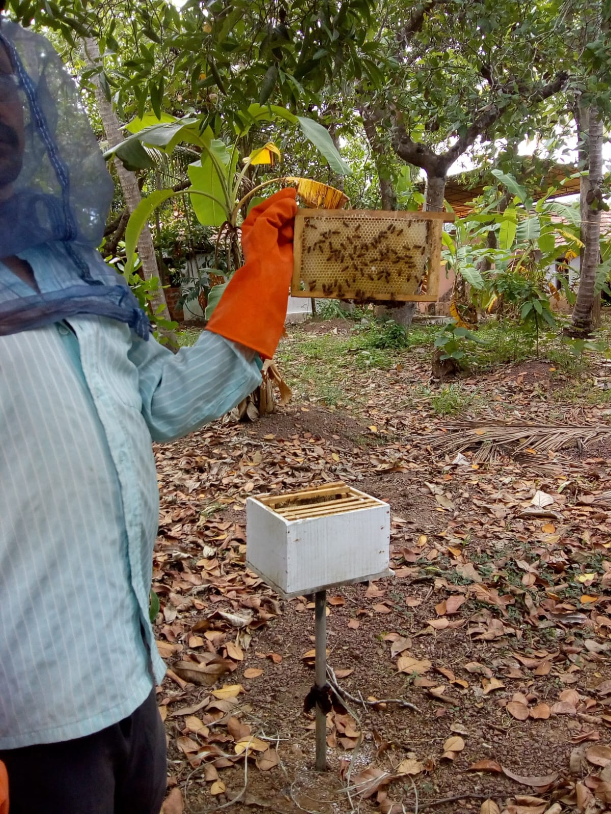
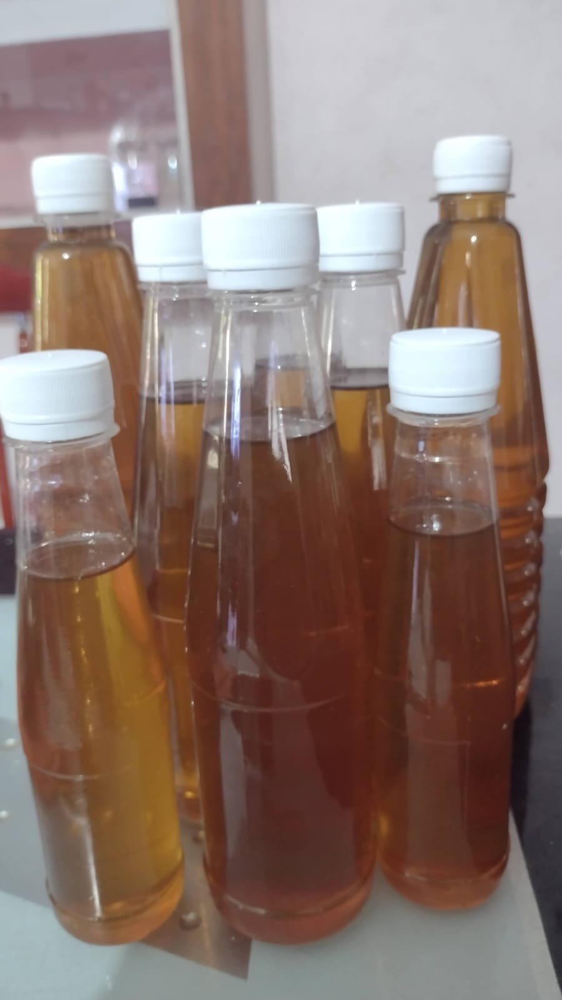

About us
Pure Raw Honey, home-cultured.
NTS Honey Garden is a small family operation in Parippally, Kollam, Kerala, India. We tend our own hives, harvest our own honey, and fill every jar by hand.
Our garden
Where it all happens
It started in 2018 with a couple of hives at the edge of our garden. We wanted honey we could vouch for, from bees we looked after ourselves. The colonies did well, the jars began to travel further than our kitchen, and NTS Honey Garden took shape.
Everything still happens in the same place. The bees forage among our garden flowers, fruit trees and the wild growth beyond the fence. We watch the colonies through the year, take honey only when there is plenty to spare, and bottle it a few steps from where it was made.

How we keep bees
Bees first, honey second
- Only what they can spare. Every colony keeps enough for itself through the lean months.
- Calm handling. Hives are opened gently, with a cool smoker, and only as often as the bees need.
- Clean surroundings. No pesticides on our land, and nothing sprayed near the hives during a flow.
- Natural forage. Our bees work garden flowers and fruit blossom
- Watchful care. We check each colony for health, space and a laying queen right through the season.

Location & region
Where our honey comes from
Our hives sit in and around our garden in Parippally, Kollam, Kerala, India. What is flowering nearby is what gives each batch its character.
Garden flowers
The everyday forage right outside the hives, through most of the year.
Fruit trees
Mango, coconut and jackfruit blossom bring a bright note to the spring batches.
Neighbouring land
Our bees also pollinate nearby smallholdings, which is welcome on both sides.
Harvesting & bottling
A short journey, by design
We take only fully capped frames, when the bees themselves have decided the honey is ready. It is spun out cold, passed once through cloth to catch pieces of wax, rested so air bubbles rise, and bottled by hand — all in the same place.
Nothing is added, and nothing is mixed in from anywhere else. What is in the jar is what our bees made.
Follow a jar from hive to bottle
Life at the garden
A few glimpses




Come taste the difference
Order a bottle from the current batch — pay when we confirm.